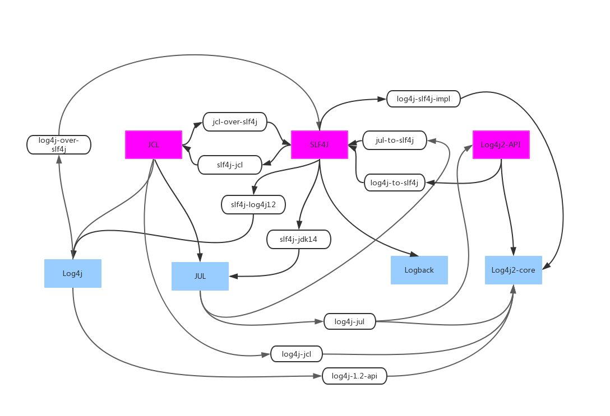
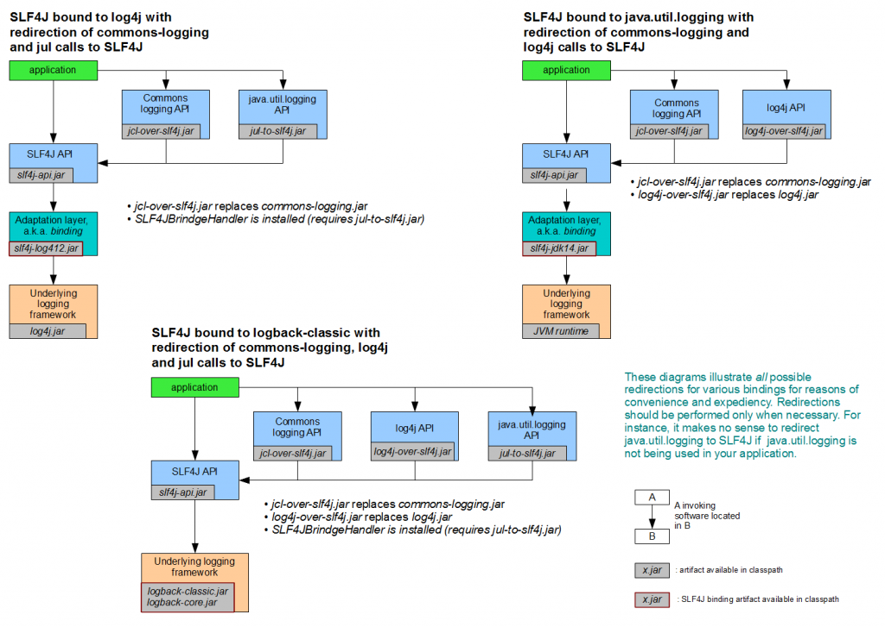
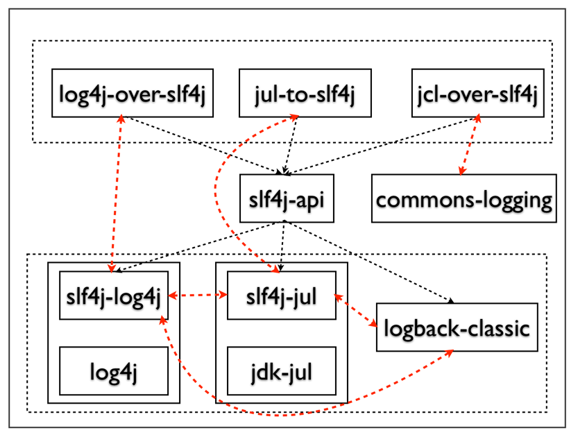

Java Logging
log 历史
| 阶段 | 阶段 | 阶段 | 阶段 | 阶段 |
|---|---|---|---|---|
| log4j | apache commons logging（JCL） | log4j2 | ||
| JUL | ||||
| simple log | ||||
| logback + slf4j |
多个项目使用不同的 logging 库 + 传递依赖等于依赖管理不规范，日志库泛滥以至互斥。
具体框架与门面
所谓的日志框架，指的是日志输出的具体实现，常见的日志框架包括但不仅限于 JUL（Java Util Logging）、Log4j、Log4j2 和 Logback。这些框架的功能不尽相同，比如有些框架支持友好地打印异常，有些不支持，有些框架不支持，不同的框架的日志级别也各有差异。
因此，诞生了日志门面。所谓的门面，就是“使用一个中间层解耦”这一具体思想的应用。使用了门面，可以屏蔽日志使用者对于具体差异的依赖，既让代码变得整洁，而且可以简单地切换实现而不需要修改代码。没有日志门面，不足以统一日志框架的使用。
log facade（定义 interface，早期的 JCL 时代，facade 也被叫做接口）-> log implementation



最上层表示桥阶层，下层表示具体的实现层，中间是接口层，可以看出这个图中所有的jar都是围绕着slf4j-api活动的
JCL
JCL 全称 Jakarta Commons Logging。由于历史原因，Spring最开始在core包中引入的是commons-logging（JCL标准实现）的日志系统，官方考虑到兼容问题，在后续的Spring版本中并未予以替换，而是继续沿用。如果考虑到性能、效率，应该自行进行替换，在项目中明确指定使用的日志框架，从而在编译时就指定日志框架。
因为这一错误的设计决定，Spring 后悔了：
The mandatory logging dependency in Spring is the Jakarta Commons
Logging API (JCL). We compile against JCL and we also make JCL Log
objects visible for classes that extend the Spring Framework. It’s
important to users that all versions of Spring use the same logging
library: migration is easy because backwards compatibility is
preserved even with applications that extend Spring. The way we do
this is to make one of the modules in Spring depend explicitly on
commons-logging (the canonical implementation of JCL), and then make
all the other modules depend on that at compile time. If you are using
Maven for example, and wondering where you picked up the dependency on
commons-logging, then it is from Spring and specifically from the
central module called spring-core.Spring中强制使用的是Jakarta Commons Logging API
(JCL)日志系统。我们基于JCL进行编译，构建JCL日志对象，这些同时也对扩展自Spring类可见的。对于使用者而言，确保不同版本的Spring使用相同的日志系统是非常重要的–代码迁移需要确保逆向兼容性。我们之所以这样做，是为了在Spring的一个包中明确的依赖于commons-logging（JCL权威实现），而其他包就基于这个包进行构建编译。如果你使用maven，你可以发现commons-logging以来自Spring-core包。The nice thing about commons-logging is that you don’t need anything
else to make your application work. It has a runtime discovery
algorithm that looks for other logging frameworks in well known places
on the classpath and uses one that it thinks is appropriate (or you
can tell it which one if you need to). If nothing else is available
you get pretty nice looking logs just from the JDK (java.util.logging
or JUL for short). You should find that your Spring application works
and logs happily to the console out of the box in most situations, and
that’s important.使用commons-logging的好处是，你不需要做其他额外事情就可以让程序正常工作。它有运行时的发现算法，能够在运行时从classpath自动发现其他日志框架，并自行挑选其中一个合适的，或者你自行指定一个。如果在运行时没有发现任何其他日志框架，则commons-loggin会直接使用JDK的日志系统（java.util.logging或JUL）。
Unfortunately, the runtime discovery algorithm in commons-logging,
while convenient for the end-user, is problematic. If we could turn
back the clock and start Spring now as a new project it would use a
different logging dependency. The first choice would probably be the
Simple Logging Facade for Java ( SLF4J), which is also used by a lot
of other tools that people use with Spring inside their applications.非常不幸的是，对于终端用户而言，commons-logging的运行时发现算法是合适的，但对于其他使用场景，却是问题重重。如果时间可以重来，让我们重新选择一个不同的日志系统，我们可能会选择SLF4J。
Spring 专门有个 spring-jcl 项目来支持 spring 项目通过 LogAdapter 来切换不同的日志实现。其具体使用步骤是：
- 使用 SLF4J-JCL 桥接（ bridge Spring to SLF4J）包替换commons-logging包。
- 使用 SLF4J 来调用 LogBack、Log4j 等 API。
老的调用关系：spring log -> apache commons-logging -> log4j
新的调用关系：spring log -> SLF4J-JCL -> slf4j -> log4j2
SLF4J-JCL 支持的日志框架有： SLF4J、Log4J2、JUL。
common-logging
Java 界里有许多实现日志功能的工具，最早得到广泛使用的是 log4j，许多应用程序的日志部分都交给了 log4j，不过作为组件开发者，他们希望自己的组件不要紧紧依赖某一个工具，毕竟在同一个时候还有很多其他很多日志工具，假如一个应用程序用到了两个组件，恰好两个组件使用不同的日志工具，那么应用程序就会有两份日志输出了。
为了解决这个问题，Apache Commons Logging （之前叫 Jakarta Commons Logging，JCL）粉墨登场，JCL 只提供 log 接口，具体的实现则在运行时动态寻找。这样一来组件开发者只需要针对 JCL 接口开发，而调用组件的应用程序则可以在运行时搭配自己喜好的日志实践工具。
所以即使到现在你仍会看到很多程序应用 JCL + log4j 这种搭配，不过当程序规模越来越庞大时，JCL的动态绑定并不是总能成功，具体原因大家可以 Google 一下，这里就不再赘述了。解决方法之一就是在程序部署时静态绑定指定的日志工具，这就是 SLF4J 产生的原因。
common-logging是apache提供的一个通用的日志接口。用户可以自由选择第三方的日志组件作为具体实现 - common-logging 也是个日志门面。
commons-logging日志系统是基于运行发现算法（runtime-discovery）- 常见的方式就是每次使用org.apache.commons.logging.LogFactory.getLogger(xxx)，就会启动一次发现流程，获取最适合的日志系统进行日志记录，其效率要低于使用SLF4J。
1 | |
动态查找原理：Log 是一个接口声明。LogFactory 的内部会去装载具体的日志系统，并获得实现该Log 接口的实现类。
- 寻找org.apache.commons.logging.LogFactory 属性配置。
- 否则，利用JDK1.3 开始提供的service 发现机制，会扫描classpah 下的META-INF/services/org.apache.commons.logging.LogFactory文件，若找到则装载里面的配置，使用里面的配置。
- 否则，从Classpath 里寻找commons-logging.properties ，找到则根据里面的配置加载。
- 否则，使用默认的配置：如果能找到Log4j 则默认使用log4j 实现，如果没有则使用JDK14Logger 实现，再没有则使用commons-logging 内部提供的SimpleLog 实现。
common-logging通过动态查找的机制，在程序运行时自动找出真正使用的日志库。由于它使用了ClassLoader寻找和载入底层的日志库， 导致了象OSGI这样的框架无法正常工作，因为OSGI的不同的插件使用自己的ClassLoader。 OSGI的这种机制保证了插件互相独立，然而却使Apache Common-Logging无法工作。
SLF4J
类似于Apache Common-Logging，是对不同日志框架提供的一个门面封装，可以在部署的时候不修改任何配置即可接入一种日志实现方案。但是，他在编译时静态绑定真正的Log库。 slf4j-api 会去调用StaticLoggerBinder这个类获取绑定的工厂类，而每个日志实现会在自己的jar中提供这样一个类，这样slf4j-api就实现了编译时绑定实现。
1 | |
slf4j在编译时静态绑定（compile-time bindings）真正的Log库,因此可以再OSGI中使用。另外，SLF4J 支持参数化的log字符串，避免了之前为了减少字符串拼接的性能损耗而不得不写的if(logger.isDebugEnable())，现在你可以直接写：logger.debug(“current user is: {}”, user)。拼装消息被推迟到了它能够确定是不是要显示这条消息的时候，但是获取参数的代价并没有幸免。
最佳实践：
- 总是使用Log Facade，而不是具体Log Implementation。具体来说，现在推荐使用 Log4j-API 或者 SLF4j，不推荐继续使用 JCL。
- 只添加一个 Log Implementation依赖
- 具体的日志实现依赖应该设置为optional和使用runtime scope。如：
1 | |
设为optional，依赖不会传递，这样如果你是个lib项目，然后别的项目使用了你这个lib，不会被引入不想要的Log Implementation 依赖；
Scope设置为runtime，是为了防止开发人员在项目中直接使用Log Implementation中的类，而不适用Log Facade中的类。
- 如果有必要, 排除依赖的第三方库中的Log Impementation依赖
这是很常见的一个问题，第三方库的开发者未必会把具体的日志实现或者桥接器的依赖设置为optional，然后你的项目继承了这些依赖——具体的日志实现未必是你想使用的，比如他依赖了Log4j，你想使用Logback，这时就很尴尬。另外，如果不同的第三方依赖使用了不同的桥接器和Log实现，也极容易形成环。
这种情况下，推荐的处理方法，是使用exclude来排除所有的这些Log实现和桥接器的依赖，只保留第三方库里面对Log Facade的依赖。
比如阿里的JStorm就没有很好的处理这个问题，依赖jstorm会引入对Logback和log4j-over-slf4j的依赖，如果你想在自己的项目中使用Log4j或其他Log实现的话，就需要加上excludes:
1 | |
- 避免为不会输出的log付出代价。注意使用 lambda 来惰性求职（optional 风格的求值）。
Log4j2
现在有了更好的 SLF4J 和 Logback——你会想事情到这里总该了解了吧，让他们慢慢取代JCL 和 Log4j 好了。
然而维护 Log4j 的人不这样想，他们不想坐视用户一点点被 SLF4J /Logback 蚕食，继而搞出了 Log4j2。
Log4j2 和 Log4j1.x 并不兼容，设计上很大程度上模仿了 SLF4J/Logback，性能上也获得了很大的提升。
Log4j2 也做了 Facade/Implementation 分离的设计，分成了 log4j-api 和 log4j-core。
参考文献：